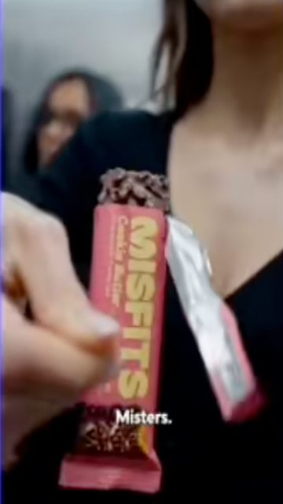

Cross-border UGC Short Video Workflow
Output: one 8-second vertical UGC short video with voiceover, subtitles, cover title and tags. The finished video is on the left.
Built for cross-border sellers. The pain: making one UGC short video for one product means writing the idea, the storyboard and the copy, then generating, and starting over every time. As a template, you swap the product and the model, the flow stays the same, and the video comes out. Public template on Yuanji AI, with a tutorial video.
How it works
- Reads the images and text, lists category, packaging details and appearance, summarizes the core selling points
- Three constraints: only from the uploaded material, packaging details written specifically, selling points not exaggerated
- Decides which UGC scene fits this product, sets the target audience and the mood
- Image texture, color tone, how the person looks, how the product appears; outputs a structured description
- Written second by second: shot, the person's action, when the product enters the frame, sound effects
- Writes voiceover and subtitles against the timeline, gives three cover titles and ten tags
- All previous outputs are combined into a prompt and the video is generated; a person checks the result and goes back to fix the Agent if it is wrong
Tuned, not written
When the video has a problem, go back to the matching node, add one constraint, run again.



Reach
Upload your own product and model photos and it runs
The person breaks down the flow and sets the constraints, AI runs each step
Tools
Yuanji AI Zaojing canvas · Multi-Agent nodes · Image-to-video